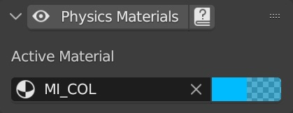
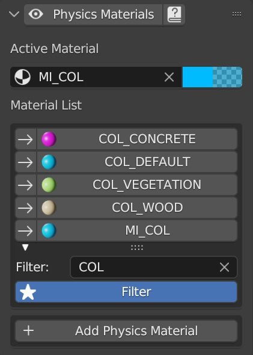
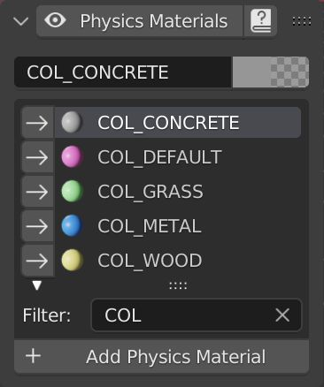
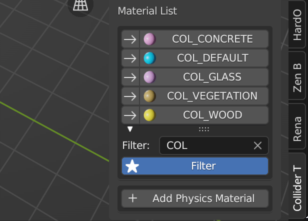
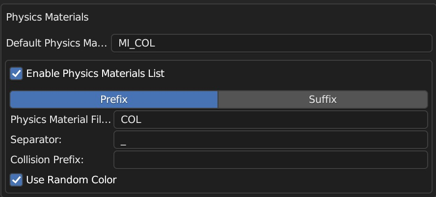
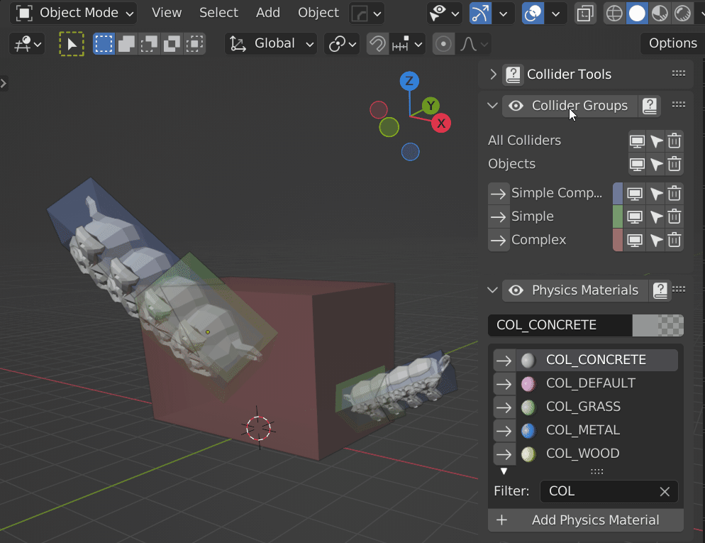

Physics Materials
Some game engines support physics materials for colliders, allowing differentiation of various materials upon impact and triggering corresponding sound effects or visual effects (VFX). For example, different footprints and step sounds can be generated based on the ground material.
Collider Tools offers two modes to cater to different user preferences. In the preferences, you can select either the simple mode or the advanced mode.
In the simple mode, you can define a single physics material, making it ideal for quick and straightforward setups. This mode allows you to specify the essential properties of the material, such as its name, color, and other relevant settings.
On the other hand, the advanced mode provides a comprehensive list of physics materials, along with a range of operations to create, add, and assign different physics materials to objects. This mode is well-suited for complex projects that require multiple materials with specific characteristics. It offers a more detailed and extensive control over the physics materials, enabling precise customization and fine-tuning for each material.
 
Collider Tools utilizes Blender's internal material system to define physics materials. You can easily specify the desired physics material from a convenient drop-down menu in the properties panel. Additionally, a filtering option is available, enabling you to display only materials that contain a specific string, such as "COL_". This simplifies the material selection process by showing relevant options. Furthermore, you can modify the material at any time, just like any other regular mesh object.

New physics materials can be created with the Add Physics Material button. Physics materials are standard Blender materials. The advantage of creating them from here is that you can directly set all important settings like the name and color. The color is randomly generated by default and can be alternated by the user. The random coloring can be disabled from the preferences.

Default settings for physics material are set in the preferences in the Presets tab. They are saved and loaded with all other preset settings. A default material with the here specified name is created when blender gets started.

Toggle Physics Material and Collider Group display
